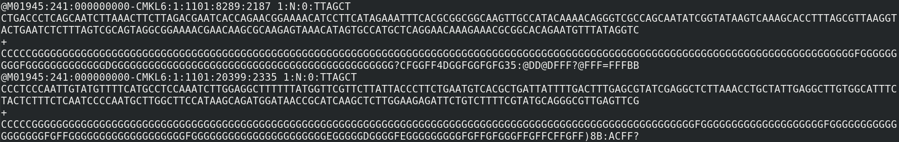
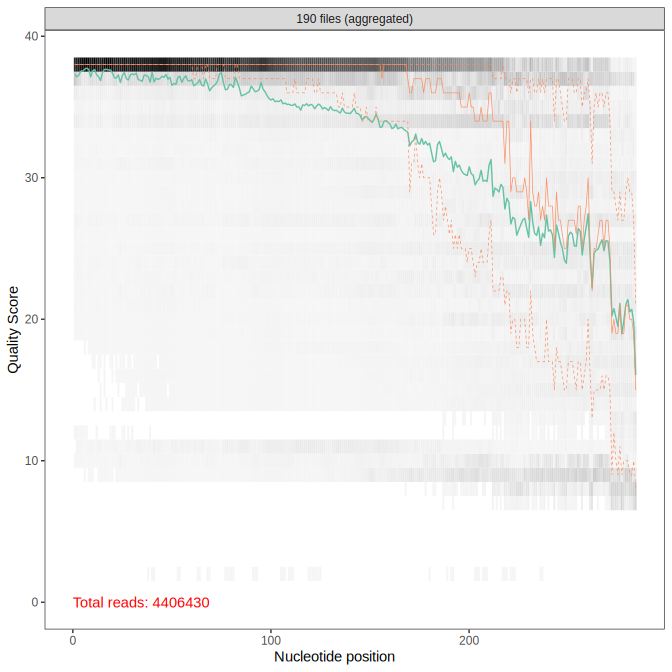

Nicolas Henry
Let’s have a closer look of what we have
We need a bioinformatic pipeline to:
Two files (R1 and R2) per sequencing run or per sample (60 first nucleotides):
R1:
@M05074:31:000000000-BC3R3:1:1101:13622:1477 1:N:0:1
TAACAACCCAGCAGCTGCGGTAATTCCAGCTCCAATAGCGTATATTTAAGTTGTTGCAGT
+
---A99EBC-,C,,CF,@++F7,CFFF9,CEFF8,E,,C+B7F<FFF9,,CE,CF,;,,CR2:
@M05074:31:000000000-BC3R3:1:1101:13622:1477 2:N:0:1
ACAACACTTTCGTTCTTGCTTGATGAAAACATCCTTGGCAAATGCTTTCGCATTAGTTCG
+
-86@BCFFFGF@FGGFG9,CF,,C6,<A<F@FGGGGA,C,C8C<<FEFG:@,,B,,CFE:Per record: identifier, sequence, quality
| Value | Description |
|---|---|
| M05074 | the unique instrument id |
| 31 | the run id |
| 000000000-BC3R3 | the flowcell id |
| 1 | flowcell lane |
| 1101 | tile number within the flowcell lane |
| 13622 | ‘x’-coordinate within the tile |
| 1477 | ‘y’-coordinate within the tile |
| 1 | the member of a pair |
| N | Y if the read is filtered (did not pass) |
| 0 | 0: none of the control bits are on |
| 1 | index sequence |
The tag, informs you from which sample the read come from
The primer used for the amplification
The targeted sequence (metabarcode)
Quality score encoded using ASCII characters:
| ASCII character | Quality score |
|---|---|
| ! | 0 |
| ” | 1 |
| # | 2 |
| ASCII character | Quality score |
|---|---|
| G | 38 |
| H | 39 |
| I | 40 |
The Phred quality score Q is related to the base calling error probability P according to the following formula:
\[Q = -10\log_{10}P\]
\[P=10^{Q/-10}\]
DADA (Divisive Amplicon Denoising Algorithm) an algorithm to denoise Roche’s 454 platform errors (Rosen et al. 2012)
DADA2 implements a new quality-aware model of Illumina amplicon errors (Callahan et al. 2016)
DADA2 is an open-source R package https://github.com/benjjneb/dada2
plotQualityProfile()filterAndTrim()filterAndTrim()dada()mergePairs()removeBimeraDenovo()assignTaxonomy()But some preliminary steps are missing…
Tags are used to encode the sample provenance of the reads. Reads need to be grouped by sample provenance (demultiplexing)
Primer sequences will bias the error model built by DADA2 and need to be removed (primer trimming).
Both task can be achieved using Cutadapt, a command line-tool to find and remove error-tolerantly adapters from reads (Martin et al. 2011).
If your tags are in a fasta file with corresponding sample names as header, you can use this command-line:
You end up with as many R1 and R2 files as samples you have
Help! My reads are mixed-orientated
Run cutadapt a second time, looking for tags in R2.
Keep the outputs of the two rounds separated for the rest of the workflow.
To remove forward and reverse primer sequences form pair-end read files:
As for demultiplexing, if reads are mix-orientated, run cutadapt twice
The overall quality of the sequencing is checked using plotQualityProfile()
Outside of DADA2, you can also use FASTQC
If the overall quality is too low, you will probably have to resequence your samples

A quality drop is often observed by the end of the reads
Trimming, at a given length, will improve the overall read quality
Danger
After trimming, make sure that forward and reverse reads still overlap
Reads of low quality and/or with ambiguous nucleotides (N) after trimming are filtered out.
Both length trimming and quality filtering are achieved using the function filterAndTrim()
Is sequence \(i\) generated by sequence \(j\) because of sequencing errors?
In order to define if \(i\) is an error of \(j\) and perform denoising using DADA2, we need to compute:
The rate at which an amplicon read with sequence i is produced from sample sequence j is reduced to the product over the transition probabilities between the L aligned nucleotides:
\[\lambda_{ji} = \prod_{l=0}^L p(j(l) \rightarrow i(l),q_i(l))\]
The abundance p-value (\(p_A\)) is the probability of all reads of \(i\) (\(a_i\)) or more being produced from \(j\) during amplification ore sequencing.
\[p_A(j \rightarrow i) = \frac{1}{1- \rho_{\mathrm{pois}}(n_j\lambda_{ji},0)} \sum_{a=a_i}^\infty \rho_{\mathrm{pois}}(n_j\lambda_{ji},a)\]
A low p-value indicate that it is unlikely that \(i\) is noise from amplifying and sequencing \(j\)
Repeat steps 3 to 5 until all abundance p-values are greater than \(\Omega_A\)
How do we compute \(\lambda_{ji}\) if we don’t know the error rate for each possible transition?
The error rates will be learned from the data using learnErrors()
The learnErrors method learns this error model from the data, by alternating estimation of the error rates and inference of sample composition until they converge on a jointly consistent solution
You can visualise the estimated error rates using the function plotErrors()
After dereplicating your sequences (derepFastq()), denoise using the function dada()
By default sample inference is performed on each sample individually (pool = FALSE).
If you are interested in rare variants present in several samples use pool = TRUE
When working on big data, pool = "pseudo" is an interesting alternative to pool = TRUE
Merge forward and reverse reads using mergePairs()
minOverlap: minimum size of overlapmaxMismatch: maximum number of mismatchesjustConcatenate: in case your reads don’t overlapChimeras are artifact sequences formed by two or more biological sequences incorrectly joined together.
We find and remove bimeras (two-parent chimeras) using the function removeBimeraDenovo()
Chimeric sequences are identified if they can be exactly reconstructed by combining a left-segment and a right-segment from two more abundant “parent” sequences.
Can be done per sample (method="per-sample"), for the entire dataset (method="pooled") or in a consensus way (method="consensus")
Taxonomic assignment within DADA2 workflow, assignTaxonomy(), is achieved using a native implementation of the naive Bayesian classifier method (Wang et al. 2007).
Reference fastas for the three most common 16S databases: Silva, RDP and GreenGenes are maintained by dada2’s team.
For eukaryotes, a dada2 formatted version of PR2 can be found here.
ASVs can be filtered out if: